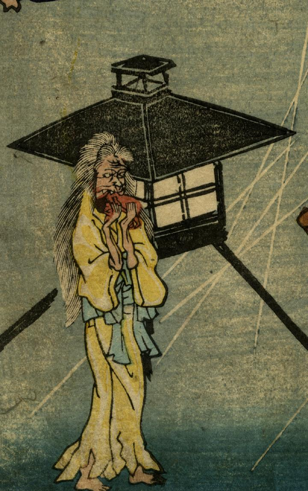

街路灯の前に立つ老婆。長い白髪が乱れ、黄色い着物を水色の帯で絞めている。両手で嬰児を持ち喰らっている。
出典：親書誌：U426_nichibunken_0272：かつば化くらべ；カッパ バケクラベ／日付：2014／資源識別子：U426_nichibunken_0272_0007_0000
Copyright (c)2010- International Research Center for Japanese Studies, Kyoto, Japan. All rights reserved.